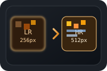

Dual Image Super-Resolution for Satellite Imagery
Fuse two low-resolution captures into a single 512×512 high-resolution satellite image with integrated blind quality assessment.
41.45 dB PSNR
0.97 SSIM
4th Place Nationally · ISRO BAH 2025
17,000+ image pairs
PyTorchShiftNetHRNetViTResNet50OptunaTIFF